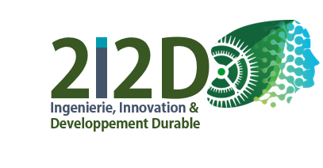
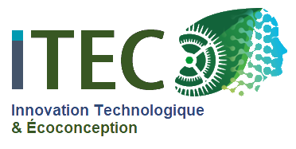

Séquence 02
Comment réduire l'impact environnemental dans l'habitat ?
Une séquence consacrée à l'habitat et au développement durable.

Navigue entre les différentes séquences pour retrouver les cartes mentales, les activités et leurs ressources.

Sélectionne une séquence disponible pour accéder à sa carte mentale.
Analyser et améliorer des systèmes au service du sport.
Une séquence consacrée à l'habitat et au développement durable.
Explorer la domotique, les objets connectés et les mécanismes.
Concevoir des solutions technologiques au service de l'autonomie.
Analyser les déplacements et imaginer une mobilité plus intelligente.
Un espace consacré au projet STI2D, à découvrir prochainement.